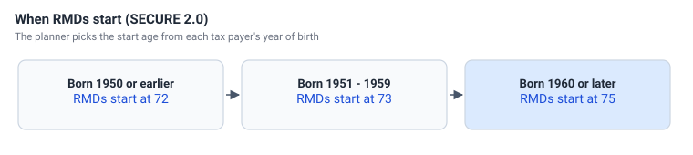
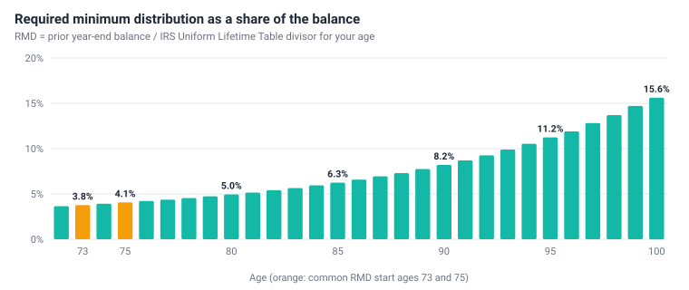
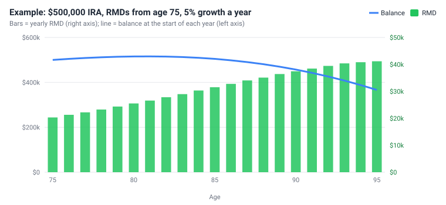

Required minimum distributions (RMDs)
Traditional IRAs and 401(k)s were funded with untaxed money, so the IRS requires you to start taking money out - and paying tax on it - at a certain age. These required minimum distributions grow as a share of the account every year.
When RMDs start

Under the SECURE 2.0 Act, the start age depends on the year of birth. The planner takes it from the account owner's year of birth on the Tax Payers page. RMDs apply to IRA and 401(k) accounts; Roth accounts have no RMDs for the owner.
How an RMD is calculated
For each IRA and 401(k), every year from the start age:
RMD = balance at the end of last year ÷ divisor for your age this year
The divisor comes from the IRS Uniform Lifetime Table in the RMD Table. At 75 it is 24.6, so the RMD is 4.07% of the balance; at 80 it is 4.95% and at 90 8.20%.

An example

A $500,000 IRA growing 5% a year has a first RMD of $20,325 at 75. Because the percentage rises every year, the RMD keeps growing - $31,543 at 85 and $41,174 at 95 - even as the balance starts to shrink. Larger RMDs mean more taxable income, which can also make more of your Social Security taxable and raise your Medicare premiums.
What the planner does
- Every withdrawal counts, as the IRS counts it. An expense that names the IRA or 401(k) in its From column is withdrawn from that account in step 5 and counts toward its RMD. Step 4 takes only what those expenses don't cover; if they cover all of it, no separate RMD is taken.
- The rest is taken in step 4 from the account's investments, in proportion to their balances, and paid into the cash account (Savings or Checking). Auto spends the cash account first, so the year's living expenses, taxes and Medicare paid by Auto use the RMD before Auto takes anything more from an IRA or 401(k) - the way most retirees spend their RMD. That is why the RMD step comes before the bills.
- What is not spent by the end of the year is reinvested in a brokerage account.
- It is reported on Form 1040 line 4a (IRA) or 5a (401(k)) as ordinary income.
- The account owner's (trustee's) age is used. A joint account uses tax payer 1's age, and after the owner's death the surviving tax payer's age is used.
- Each IRA and 401(k) account meets its own RMD. (The IRS lets you take the total for all your IRAs from any one of them; the planner does not combine them.)
Example. Pat, 76, has a $100,000 IRA, so the RMD is $4,219 ($100,000 / 23.7). A $3,000 trip names the IRA as its From account. Step 4 takes $1,219 into savings and step 5 takes $3,000 for the trip: the IRA pays out $4,219 in all, and line 4a shows $4,219 - not $7,219.